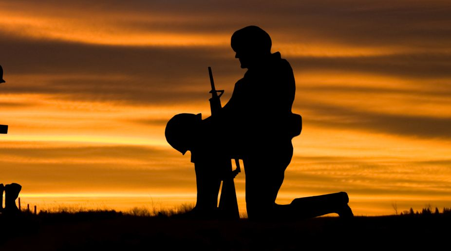

Tribute to Indian Freedom Fighters
India's journey to independence from British colonial rule was a saga of resilience, courage, and unwavering determination, guided by the selfless sacrifice of countless individuals who dedicated their lives to the cause of freedom. This tribute is a homage to the collective spirit and heroism of India's freedom fighters.

The Struggle for Freedom
For nearly two centuries, India groaned under the weight of British imperialism. Yet, from the darkness of subjugation emerged a generation of extraordinary men and women who dared to dream of a free India.
These freedom fighters came from diverse backgrounds, from different regions, and spoke various languages, but they shared a common vision - the vision of a free, united, and prosperous India. They were teachers, lawyers, poets, farmers, and intellectuals who, in the pursuit of justice, transformed into valiant warriors for a just cause.
The Sacrifices Made
The sacrifices made by these freedom fighters were immeasurable. Many endured imprisonment, physical abuse, and even laid down their lives for the cause. Bhagat Singh, Subhas Chandra Bose, Sarojini Naidu, and countless others exemplified bravery in the face of adversity.
The Legacy Lives On
Today, as an independent nation, we owe our freedom to the unyielding spirit of these heroes. Their legacy endures, reminding us of the values they stood for - justice, equality, and freedom. Their courage continues to inspire not only India but the entire world.
As we celebrate our hard-fought independence, let us take a moment to remember and honor all those who fought for the freedoms we enjoy today. Their sacrifices serve as a testament to the power of collective determination, and their memory lives on as a guiding light for future generations.
In gratitude and respect, we pay tribute to these unsung heroes who, with indomitable spirit and unwavering resolve, paved the way for a free India.
 >subash chandra bose
>subash chandra bose